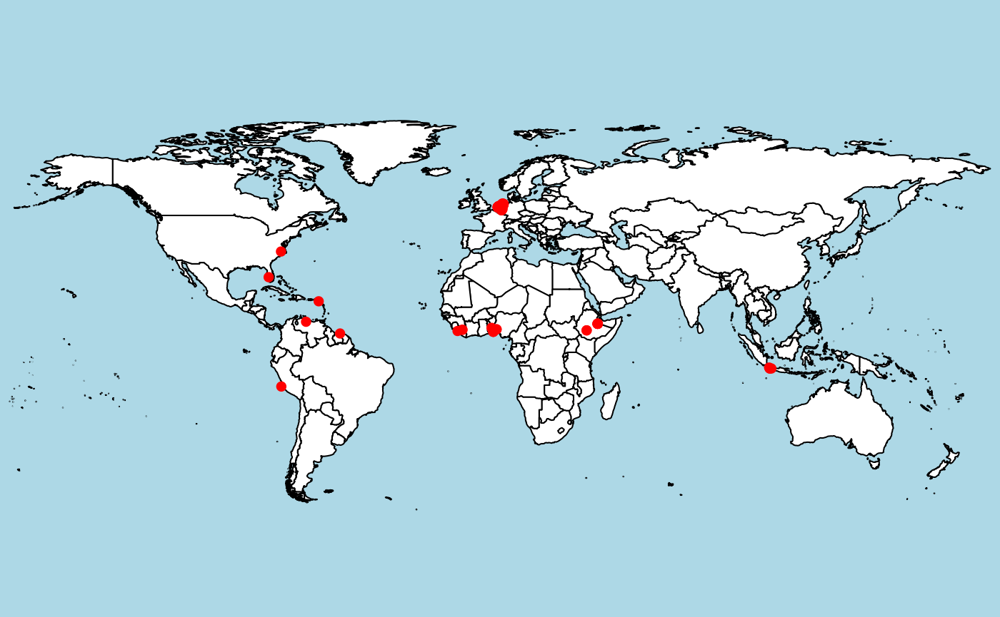

The ‘En Tibi’ tomato specimen
Using the SpecimenClient
For the different data types in the NBA (Specimen, Taxon, Multimedia, Geo), there are respective client classes (SpecimenClient, TaxonClient, MultimediaClient, GeoClient). To retreive electronic specimen records, we instantiate a SpecimenClient:
library(nbaR)
sc <- SpecimenClient$new()To get an overview of what we can do with such a client, ?SpecimenClient will give us some description and list all the methods that are available for this client. To get an overview of what nbaR stores in a Specimen object, we could use the function get_paths, which lists everything that can be queried for a specimen:
res <- sc$get_paths()Note that client class methods (and other class members) are accessed with a $. The response from the taxon client is stored in res, an object of class Response. Have a look at ?Response to see what this object contains. But how to get the data? It is in the field content.
res$content## [1] "sourceSystem.code"
## [2] "sourceSystem.name"
## [3] "sourceSystemId"
## [4] "recordURI"
## [5] "unitID"
## [6] "unitGUID"
## [7] "collectorsFieldNumber"
## [8] "assemblageID"
## [9] "sourceInstitutionID"
## [10] "sourceID"
## [11] "previousSourceID"
## [12] "owner"
## [13] "licenseType"
## [14] "license"
## [15] "recordBasis"
## [16] "kindOfUnit"
## [17] "collectionType"
## [18] "sex"
## [19] "phaseOrStage"
## [20] "title"
## [21] "notes"
## [22] "preparationType"
## [23] "previousUnitsText"
## [24] "numberOfSpecimen"
## [25] "fromCaptivity"
## [26] "objectPublic"
## [27] "multiMediaPublic"
## [28] "acquiredFrom.agentText"
## [29] "gatheringEvent.projectTitle"
## [30] "gatheringEvent.worldRegion"
## [31] "gatheringEvent.continent"
## [32] "gatheringEvent.country"
## [33] "gatheringEvent.iso3166Code"
## [34] "gatheringEvent.provinceState"
## [35] "gatheringEvent.island"
## [36] "gatheringEvent.locality"
## [37] "gatheringEvent.city"
## [38] "gatheringEvent.sublocality"
## [39] "gatheringEvent.localityText"
## [40] "gatheringEvent.dateTimeBegin"
## [41] "gatheringEvent.dateTimeEnd"
## [42] "gatheringEvent.dateText"
## [43] "gatheringEvent.method"
## [44] "gatheringEvent.altitude"
## [45] "gatheringEvent.altitudeUnifOfMeasurement"
## [46] "gatheringEvent.behavior"
## [47] "gatheringEvent.biotopeText"
## [48] "gatheringEvent.depth"
## [49] "gatheringEvent.depthUnitOfMeasurement"
## [50] "gatheringEvent.code"
## [51] "gatheringEvent.establishmentMeans"
## [52] "gatheringEvent.gatheringPersons.agentText"
## [53] "gatheringEvent.gatheringPersons.fullName"
## [54] "gatheringEvent.gatheringPersons.organization.agentText"
## [55] "gatheringEvent.gatheringPersons.organization.name"
## [56] "gatheringEvent.gatheringOrganizations.agentText"
## [57] "gatheringEvent.gatheringOrganizations.name"
## [58] "gatheringEvent.siteCoordinates.longitudeDecimal"
## [59] "gatheringEvent.siteCoordinates.latitudeDecimal"
## [60] "gatheringEvent.siteCoordinates.gridCellSystem"
## [61] "gatheringEvent.siteCoordinates.gridLatitudeDecimal"
## [62] "gatheringEvent.siteCoordinates.gridLongitudeDecimal"
## [63] "gatheringEvent.siteCoordinates.gridCellCode"
## [64] "gatheringEvent.siteCoordinates.gridQualifier"
## [65] "gatheringEvent.siteCoordinates.coordinateErrorDistanceInMeters"
## [66] "gatheringEvent.siteCoordinates.spatialDatum"
## [67] "gatheringEvent.siteCoordinates.geoShape"
## [68] "gatheringEvent.namedAreas.areaName"
## [69] "gatheringEvent.namedAreas.areaClass"
## [70] "gatheringEvent.associatedTaxa.name"
## [71] "gatheringEvent.associatedTaxa.relationType"
## [72] "gatheringEvent.chronoStratigraphy.youngRegionalSubstage"
## [73] "gatheringEvent.chronoStratigraphy.youngRegionalStage"
## [74] "gatheringEvent.chronoStratigraphy.youngRegionalSeries"
## [75] "gatheringEvent.chronoStratigraphy.youngDatingQualifier"
## [76] "gatheringEvent.chronoStratigraphy.youngInternSystem"
## [77] "gatheringEvent.chronoStratigraphy.youngInternSubstage"
## [78] "gatheringEvent.chronoStratigraphy.youngInternStage"
## [79] "gatheringEvent.chronoStratigraphy.youngInternSeries"
## [80] "gatheringEvent.chronoStratigraphy.youngInternErathem"
## [81] "gatheringEvent.chronoStratigraphy.youngInternEonothem"
## [82] "gatheringEvent.chronoStratigraphy.youngChronoName"
## [83] "gatheringEvent.chronoStratigraphy.youngCertainty"
## [84] "gatheringEvent.chronoStratigraphy.oldDatingQualifier"
## [85] "gatheringEvent.chronoStratigraphy.chronoPreferredFlag"
## [86] "gatheringEvent.chronoStratigraphy.oldRegionalSubstage"
## [87] "gatheringEvent.chronoStratigraphy.oldRegionalStage"
## [88] "gatheringEvent.chronoStratigraphy.oldRegionalSeries"
## [89] "gatheringEvent.chronoStratigraphy.oldInternSystem"
## [90] "gatheringEvent.chronoStratigraphy.oldInternSubstage"
## [91] "gatheringEvent.chronoStratigraphy.oldInternStage"
## [92] "gatheringEvent.chronoStratigraphy.oldInternSeries"
## [93] "gatheringEvent.chronoStratigraphy.oldInternErathem"
## [94] "gatheringEvent.chronoStratigraphy.oldInternEonothem"
## [95] "gatheringEvent.chronoStratigraphy.oldChronoName"
## [96] "gatheringEvent.chronoStratigraphy.chronoIdentifier"
## [97] "gatheringEvent.chronoStratigraphy.oldCertainty"
## [98] "gatheringEvent.bioStratigraphy.youngBioDatingQualifier"
## [99] "gatheringEvent.bioStratigraphy.youngBioName"
## [100] "gatheringEvent.bioStratigraphy.youngFossilZone"
## [101] "gatheringEvent.bioStratigraphy.youngFossilSubZone"
## [102] "gatheringEvent.bioStratigraphy.youngBioCertainty"
## [103] "gatheringEvent.bioStratigraphy.youngStratType"
## [104] "gatheringEvent.bioStratigraphy.bioDatingQualifier"
## [105] "gatheringEvent.bioStratigraphy.bioPreferredFlag"
## [106] "gatheringEvent.bioStratigraphy.rangePosition"
## [107] "gatheringEvent.bioStratigraphy.oldBioName"
## [108] "gatheringEvent.bioStratigraphy.bioIdentifier"
## [109] "gatheringEvent.bioStratigraphy.oldFossilzone"
## [110] "gatheringEvent.bioStratigraphy.oldFossilSubzone"
## [111] "gatheringEvent.bioStratigraphy.oldBioCertainty"
## [112] "gatheringEvent.bioStratigraphy.oldBioStratType"
## [113] "gatheringEvent.lithoStratigraphy.qualifier"
## [114] "gatheringEvent.lithoStratigraphy.preferredFlag"
## [115] "gatheringEvent.lithoStratigraphy.member2"
## [116] "gatheringEvent.lithoStratigraphy.member"
## [117] "gatheringEvent.lithoStratigraphy.informalName2"
## [118] "gatheringEvent.lithoStratigraphy.informalName"
## [119] "gatheringEvent.lithoStratigraphy.importedName2"
## [120] "gatheringEvent.lithoStratigraphy.importedName1"
## [121] "gatheringEvent.lithoStratigraphy.lithoIdentifier"
## [122] "gatheringEvent.lithoStratigraphy.formation2"
## [123] "gatheringEvent.lithoStratigraphy.formationGroup2"
## [124] "gatheringEvent.lithoStratigraphy.formationGroup"
## [125] "gatheringEvent.lithoStratigraphy.formation"
## [126] "gatheringEvent.lithoStratigraphy.certainty2"
## [127] "gatheringEvent.lithoStratigraphy.certainty"
## [128] "gatheringEvent.lithoStratigraphy.bed2"
## [129] "gatheringEvent.lithoStratigraphy.bed"
## [130] "informationWithheld"
## [131] "dataGeneralizations"
## [132] "modified"
## [133] "identifications.taxonRank"
## [134] "identifications.scientificName.fullScientificName"
## [135] "identifications.scientificName.taxonomicStatus"
## [136] "identifications.scientificName.genusOrMonomial"
## [137] "identifications.scientificName.subgenus"
## [138] "identifications.scientificName.specificEpithet"
## [139] "identifications.scientificName.infraspecificEpithet"
## [140] "identifications.scientificName.infraspecificMarker"
## [141] "identifications.scientificName.nameAddendum"
## [142] "identifications.scientificName.authorshipVerbatim"
## [143] "identifications.scientificName.author"
## [144] "identifications.scientificName.year"
## [145] "identifications.scientificName.scientificNameGroup"
## [146] "identifications.scientificName.references.titleCitation"
## [147] "identifications.scientificName.references.citationDetail"
## [148] "identifications.scientificName.references.uri"
## [149] "identifications.scientificName.references.author.agentText"
## [150] "identifications.scientificName.references.author.fullName"
## [151] "identifications.scientificName.references.author.organization.agentText"
## [152] "identifications.scientificName.references.author.organization.name"
## [153] "identifications.scientificName.references.publicationDate"
## [154] "identifications.scientificName.experts.agentText"
## [155] "identifications.scientificName.experts.fullName"
## [156] "identifications.scientificName.experts.organization.agentText"
## [157] "identifications.scientificName.experts.organization.name"
## [158] "identifications.typeStatus"
## [159] "identifications.dateIdentified"
## [160] "identifications.defaultClassification.domain"
## [161] "identifications.defaultClassification.subKingdom"
## [162] "identifications.defaultClassification.kingdom"
## [163] "identifications.defaultClassification.phylum"
## [164] "identifications.defaultClassification.subPhylum"
## [165] "identifications.defaultClassification.superClass"
## [166] "identifications.defaultClassification.className"
## [167] "identifications.defaultClassification.subClass"
## [168] "identifications.defaultClassification.superOrder"
## [169] "identifications.defaultClassification.order"
## [170] "identifications.defaultClassification.subOrder"
## [171] "identifications.defaultClassification.infraOrder"
## [172] "identifications.defaultClassification.superFamily"
## [173] "identifications.defaultClassification.family"
## [174] "identifications.defaultClassification.subFamily"
## [175] "identifications.defaultClassification.tribe"
## [176] "identifications.defaultClassification.subTribe"
## [177] "identifications.defaultClassification.genus"
## [178] "identifications.defaultClassification.subgenus"
## [179] "identifications.defaultClassification.specificEpithet"
## [180] "identifications.defaultClassification.infraspecificEpithet"
## [181] "identifications.defaultClassification.infraspecificRank"
## [182] "identifications.systemClassification.rank"
## [183] "identifications.systemClassification.name"
## [184] "identifications.vernacularNames.name"
## [185] "identifications.vernacularNames.language"
## [186] "identifications.vernacularNames.preferred"
## [187] "identifications.vernacularNames.references.titleCitation"
## [188] "identifications.vernacularNames.references.citationDetail"
## [189] "identifications.vernacularNames.references.uri"
## [190] "identifications.vernacularNames.references.author.agentText"
## [191] "identifications.vernacularNames.references.author.fullName"
## [192] "identifications.vernacularNames.references.author.organization.agentText"
## [193] "identifications.vernacularNames.references.author.organization.name"
## [194] "identifications.vernacularNames.references.publicationDate"
## [195] "identifications.vernacularNames.experts.agentText"
## [196] "identifications.vernacularNames.experts.fullName"
## [197] "identifications.vernacularNames.experts.organization.agentText"
## [198] "identifications.vernacularNames.experts.organization.name"
## [199] "identifications.identificationQualifiers"
## [200] "identifications.identifiers.agentText"
## [201] "identifications.taxonomicEnrichments.vernacularNames.name"
## [202] "identifications.taxonomicEnrichments.vernacularNames.language"
## [203] "identifications.taxonomicEnrichments.synonyms.fullScientificName"
## [204] "identifications.taxonomicEnrichments.synonyms.taxonomicStatus"
## [205] "identifications.taxonomicEnrichments.synonyms.genusOrMonomial"
## [206] "identifications.taxonomicEnrichments.synonyms.subgenus"
## [207] "identifications.taxonomicEnrichments.synonyms.specificEpithet"
## [208] "identifications.taxonomicEnrichments.synonyms.infraspecificEpithet"
## [209] "identifications.taxonomicEnrichments.synonyms.authorshipVerbatim"
## [210] "identifications.taxonomicEnrichments.defaultClassification.domain"
## [211] "identifications.taxonomicEnrichments.defaultClassification.subKingdom"
## [212] "identifications.taxonomicEnrichments.defaultClassification.kingdom"
## [213] "identifications.taxonomicEnrichments.defaultClassification.phylum"
## [214] "identifications.taxonomicEnrichments.defaultClassification.subPhylum"
## [215] "identifications.taxonomicEnrichments.defaultClassification.superClass"
## [216] "identifications.taxonomicEnrichments.defaultClassification.className"
## [217] "identifications.taxonomicEnrichments.defaultClassification.subClass"
## [218] "identifications.taxonomicEnrichments.defaultClassification.superOrder"
## [219] "identifications.taxonomicEnrichments.defaultClassification.order"
## [220] "identifications.taxonomicEnrichments.defaultClassification.subOrder"
## [221] "identifications.taxonomicEnrichments.defaultClassification.infraOrder"
## [222] "identifications.taxonomicEnrichments.defaultClassification.superFamily"
## [223] "identifications.taxonomicEnrichments.defaultClassification.family"
## [224] "identifications.taxonomicEnrichments.defaultClassification.subFamily"
## [225] "identifications.taxonomicEnrichments.defaultClassification.tribe"
## [226] "identifications.taxonomicEnrichments.defaultClassification.subTribe"
## [227] "identifications.taxonomicEnrichments.defaultClassification.genus"
## [228] "identifications.taxonomicEnrichments.defaultClassification.subgenus"
## [229] "identifications.taxonomicEnrichments.defaultClassification.specificEpithet"
## [230] "identifications.taxonomicEnrichments.defaultClassification.infraspecificEpithet"
## [231] "identifications.taxonomicEnrichments.defaultClassification.infraspecificRank"
## [232] "identifications.taxonomicEnrichments.sourceSystem.code"
## [233] "identifications.taxonomicEnrichments.taxonId"
## [234] "identifications.preferred"
## [235] "identifications.verificationStatus"
## [236] "identifications.rockType"
## [237] "identifications.associatedFossilAssemblage"
## [238] "identifications.rockMineralUsage"
## [239] "identifications.associatedMineralName"
## [240] "identifications.remarks"
## [241] "associatedMultiMediaUris.accessUri"
## [242] "associatedMultiMediaUris.format"
## [243] "associatedMultiMediaUris.variant"
## [244] "theme"Suppose that we do not know the scientific name of the tomato plant, there are two fields that store a vernacular name for a specimen:
identifications.vernacularNames.nameidentifications.taxonomicEnrichments.vernacularNames.name
The first one is the vernacular name that is exactly equal to the one in the source database. Since often, a vernacular name is missing in the source database, a taxonomic enrichment is performed during the import of the data from the source database in which, using among others the Catalogue of life, species names are enriched with synonyms and vernacular names.
Simple queries
Let’s try the first field and query for all Specimen records with identifications.vernacularNames.name field matching the name tomato, we can use the client’s query function:
res <-
sc$query(queryParams = list(identifications.vernacularNames.name = "tomato"))Note that the queryParams arguments takes a list, so we could search for more criteria. How many hits do we got?
res$content$totalSize## [1] 0No hits, thus no record has the vernacular name equal to tomato. We therefore search in identifications.taxonomicEnrichments.vernacularNames.name:
res <-
sc$query(
queryParams =
list(identifications.taxonomicEnrichments.vernacularNames.name =
"tomato")
)
# how many hits?
res$content$totalSize## [1] 0Again, no hits.
More complex queries
Let’s try partial matching. For this, we have to make a more complicated query, involving QuerySpec and QueryCondition objects, which are very powerful for constructing complex and nested queries.
A QueryCondition can be specified as follows:
qc <-
QueryCondition$new(
field = "identifications.taxonomicEnrichments.vernacularNames.name",
operator = "MATCHES",
value = "tomato")Note that we use the operator MATCHES that does a partial instead of an exact match (which would be EQUALS).
From one or multiple QueryConditions, a QuerySpec can be created, and used as input for he query function.
qs <- QuerySpec$new(conditions=list(qc))
# do the query with SpecimenClient
res <- sc$query(querySpec=qs)
# how many hits?
res$content$totalSize## [1] 420Finally, we have some hits. The content of the response of the query function is always of type QueryResult (see also ?QueryResult) which has the fields totalSize (as used above) and a resultSet, a list which stores the actual data. From the resultSet, a single Specimen object can be obtained as follows:
# retreive the first Specimen object
sp <- res$content$resultSet[[1]]$item
# check if it is really a specimen
class(sp)## [1] "Specimen" "R6"
# list fields and methods of the object
sp## <Specimen>
## Fields:
## sourceSystem: object of class <SourceSystem>
## sourceSystemId: L 0938012
## recordURI:
## id: L 0938012@BRAHMS
## unitID: L 0938012
## unitGUID: https://data.biodiversitydata.nl/naturalis/specimen/L%20%200938012
## collectorsFieldNumber: Zandvoort, GHH s.n.
## assemblageID: 1268722@BRAHMS
## sourceInstitutionID: Naturalis Biodiversity Center
## sourceID: Brahms
## previousSourceID:
## owner: Naturalis Biodiversity Center
## licenseType: Copyright
## license: CC0 1.0
## recordBasis: Herbarium sheet
## kindOfUnit:
## collectionType: Botany
## sex:
## phaseOrStage:
## title:
## notes:
## preparationType:
## previousUnitsText:
## numberOfSpecimen:
## fromCaptivity:
## objectPublic: TRUE
## multiMediaPublic:
## acquiredFrom: object of class <Agent>
## gatheringEvent: object of class <GatheringEvent>
## identifications: list of length 1
## associatedMultiMediaUris: list of length 0
## theme:
## Methods:
## fromJSONString
## toJSONString
## fromList
## toList
## printNote: By default, the NBA (and thus nbaR) returns the first 10 hits. To fetch more records, we need to specify this in the QuerySpec object.
# specify size in QuerySpec obejct
qs <- QuerySpec$new(conditions=list(qc), size=1000)
# perform query
res <- sc$query(querySpec=qs)
# do we have all records?
res$content$totalSize == length(res$content$resultSet)## [1] TRUESorting
We now want to see which one is the oldest specimen. We could, of course do the sorting in R (e.g. sort(unlist(lapply(res$content$resultSet, function(x)x$item$gatheringEvent$dateTimeBegin)))), but there is also functionality to do this directly in the query. This can be done with objects of type ?SortField, which can take a path specifying on what to sort, and whether to sort ascending or descending. We will sort our results by the values of the field gatheringEvent.dateTimeBegin:
# specify field to sort
sf <- SortField$new(path="gatheringEvent.dateTimeBegin", sortOrder="asc")
# make querySpec using sortField
qs <- QuerySpec$new(conditions=list(qc), size=1000, sortFields=list(sf))
# do the query
res <- sc$query(querySpec=qs)Now, the first result should be the specimen with a gathering event the furthest in the past.
sp <- res$content$resultSet[[1]]$item
# get date
sp$gatheringEvent$dateTimeBegin## [1] "1550-01-01T00:00:00+0000"Multimedia content
Many specimens have associated multimedia content, such as photos or videos. To retrieve e.g. the URL of the first multimedia item of our specimen:
# get multimedia URL
url <- sp$associatedMultiMediaUris[[1]]$accessUri
url## [1] "https://medialib.naturalis.nl/file/id/L.2111092/format/large"
# display image
library(knitr)
include_graphics(url)Retrieving specimen records with lat/long coordinates
Geo-referenced specimens are an invaluable resource for biogeographic analyses. The below example shows how to extract the tomato specimen (species Solanum lycopersicum) that are geo referenced. The coordinates, stored in the field gatheringEvent.siteCoordinates are then extracted and the locations are plotted on a world map.
Note: When querying for records with non-empty values for a specific field, we use the operator NOT_EQUALS in combination with the value NULL.
# conditions for specimens for Solanum lycopersicum
qc <-
QueryCondition$new(field =
'identifications.defaultClassification.genus',
operator =
'EQUALS',
value =
'Solanum')
qc2 <-
QueryCondition$new(field =
'identifications.defaultClassification.specificEpithet',
operator =
'EQUALS',
value = 'lycopersicum')
# coditions for lat/long coordinates to be present
qc3 <-
QueryCondition$new(field =
'gatheringEvent.siteCoordinates.longitudeDecimal',
operator =
"NOT_EQUALS",
value =
NULL)
qc4 <-
QueryCondition$new(field =
'gatheringEvent.siteCoordinates.latitudeDecimal',
operator =
"NOT_EQUALS",
value =
NULL)
qs <-
QuerySpec$new(conditions = list(qc, qc2, qc3, qc4), size = 1000)
# do query
res <- sc$query(querySpec = qs)
# extract coordinates
lat <-
sapply(res$content$resultSet, function(x)
x$item$gatheringEvent$siteCoordinates[[1]]$latitudeDecimal)
long <-
sapply(res$content$resultSet, function(x)
x$item$gatheringEvent$siteCoordinates[[1]]$longitudeDecimal)
#plot on world map
library('maps')
map(
"world",
fill = TRUE,
col = "white",
bg = "lightblue",
ylim = c(-60, 90),
mar = c(0, 0, 0, 0)
)
points(long, lat, col = 'red', pch = 16)